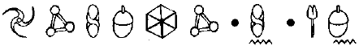
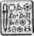

E37 ÇAVLANI, HAVEN ŞEHRİ, YERALTI BİRİMİ
ZIT müttefikler yukarı çıkmak için E37 goblin mekiğine bindiler. Holly durumdan hiçte memnun değildi. Her şeyden önce, Holly’ye bir numaralı halk düşmanı Artemis Fowl’la birlikte çalışması emredilmişti. Ve ikinci olarak da bu goblin mekiği üflesen parçalanacaktı.
Holly sivri kulaklarından birine bir iletişim donanımı taktı. “Hey, Foaly? Orada mısın?”
“Buradayım, Yüzbaşı.”
“Bana, bu çarpık antika ile neden uçtuğumu, bir kez daha hatırlatsana.”
LEPrecon pilotları çavlanın duvarlarına hızla çarpma eğilimlerinden dolayı, kuşku duydukları mekiklere çarpık derlerdi.
“Bu antika çarpıkla uçma nedenin, Yüzbaşı, goblinlerin bu mekiği istasyonun içinde inşa etmiş olmaları ve orijinal giriş rampalarından üçünün yıllarca önce ortadan kaldırılmış olmaları. Buraya yeni bir düzenek kurmak günler sürer. Bu yüzden, korkarım ki bu goblin gemisinden başka çaren yok.”
Holly kendini pilot koltuğuna bağladı. Fırlatma düğmeleri neredeyse elinde kalacak gibiydi. Bir an için Yüzbaşı Short doğal neşeli mizacına yeniden kavuştu. Akademideyken çok başarılı bir pilottu. Sınıfının birincisiydi. En son sınavda Filo Komutanı Vinyâya, karnesine şöyle yazmıştı: Harp Okulu Öğrencisi Short, bir mekiği dişlerinizin arasındaki yarığın içinden uçurabilecek yetenektedir. Bu biraz iğneleyici bir iltifattı. İlk mekik uçurma denemesinde Holly kontrolünü kaybetmiş ve mekiği Vinyâya’nın burnunun dibine düşürmüştü.
Kısacası, Holly beş saniye süreyle mutlu oldu. Sonra aklına yolcularının kimler olduğu geldi.
Bana söyleyebilir misin, acaba?” diye sordu Artemis, yardımcı pilot koltuğuna yerleşmeye çalışarak, “Rusya’daki terminal, Murmansk’a ne kadar uzaklıkta?”
Siviller sarı çizginin arkasına,” diye homurdandı Holly, Artemis’in sorusunu duymazdan gelerek.
Artemis diretti. “Bu benim için önemli. Bir kurtarma harekâtı planlamaya çalışıyorum.”
Holly dudaklarını sıkarak gülümsedi. “Burada öylesine komik bir durum var ki bu konuda bir şiir yazabilirim. Adam kaçıran biri, kaçırılan birini kurtarmak için yardım istiyor.”
Artemis şakaklarını ovuşturdu. “Holly, ben bir suçluyum, en iyi yaptığım şey de bu. Seni kaçırdığım zaman, tek düşündüğüm şey fidyeydi. Asla, hayatını tehlikeye atmak istemedim.”
“Ah, gerçekten mi?” dedi Holly. “Biyolojik bombalar ve troller dışında.”
“Doğru,” diye kabul etti Artemis. “Kimi zaman planlar kâğıttan gerçek yaşama yumuşak bir geçiş yapamıyorlar.” Artemis manikürlü tırnaklarındaki hayali kirleri temizlemek için bir an duraksadı. Ben olgunlaştım, Yüzbaşı. Burada önemli olan babam. Mafya ile yüz yüze gelmeden, tüm bilgileri bir araya getirmem gerek.”
Holly yumuşadı. Babasız büyümek kolay iş değildi. Bunu biliyordu. Kendi babası Holly henüz altmış yaşındayken ölmüştü. Aradan yirmi yıl geçmişti.
“Pekala, Çamur Çocuk, dikkatli dinle. Yalnızca bir kez anlatacağım.”
Artemis dik oturdu. Kâhya pilot kabinine girerken, başını eğdi. Bir savaş öyküsü dinleyeceğini sezmişti.
“Son iki yüzyıl içinde insan teknolojisindeki ilerlemeler yüzünden LEP tam altmış terminalini kapatmak zorunda kaldı. Kuzey Rusya’dan altmışlı yıllarda çekildik. Kola yarımadasının tamamı nükleer bir yıkım. Peri Halkı radyasyona dayanıklı değildir. Ona karşı direnemeyiz. İşin aslı, kapatacak çok fazla şey yoktu. Yalnızca Üçüncü Derece bir terminalle, birkaç gizli projektör. Peri Halkı Kuzey Kutbuna pek meraklı değildir. Orası bizim için fazla soğuk. Herkes orayı terk ettiği için mutluydu. Bu yüzden sorunun yanıtı: Murmansk'ın yaklaşık yirmi kilometre kuzeyinde, hemen hemen hiç denecek kadar az yer-üstü hizmeti olan, tek bir çalışanı bile olmayan bir terminal var
Foaly’nin İnterkomdan yükselen sesi Holly’nin insanlarla yapılmaması gereken konuşmasını yarıda kesti. “Pekala, Yüzbaşı. Tünelin içinde açık bir yolun var. Geçen alevden kalma küller olabilir, bu yüzden yavaş git.” Holly ağız mikrofonunu aşağı çekti. “Anlaşıldı, Foaly. Döndüğümde radyasyon giysileri hazır olsun. Zamanımız çok kısıtlı.”
Foaly kıkırdadı. “Fırlatıcıları çok sert kullanma, Holly. İnerken gerek Artemis’in, gerekse Kâhya’nın hipnotize edilmiş olduklarını göz önüne alacak olursak, bu teknik olarak, onların çavlanlardaki ilk yolculuğu sayılır. Onları korkutmak istemeyiz.”
Holly jikleyi gereğinden oldukça fazla açtı. “Tabii ki,” diye homurdandı. “Onları korkutmak istemeyiz.”
Artemis fren kemerlerini sıkıca bağlamaya karar verdi. Sonradan bunun iyi bir fikir olduğunu anlayacaktı.
Yüzbaşı Short eğreti mekiği mıknatıslı giriş raylarına doğru ateşledi. Mekiğin sallanan kanalarından mazgallara doğru çifte kıvılcım dalgaları yayıldı. Holly otomatik pilot ayarlarını yaptı, yoksa pilot kabinin içi Çamur Adamların kusmuklarından geçilmezdi.
Holly’nin parmakları türbo düğmelerin çevresinde dolaştı. “Pekala. Tamam, bu kovanın neler yapabileceğini-görelim, bakalım.”
“Bir rekor denemesi yapmaya kalkışma, Holly,” dedi Foaly, hoparlörden. “Bu gemi hız yapmak üzere inşa edilmedi. Bundan daha aerodinamik olan cüceler gördüm.”
Holly homurdandı. Yavaş uçmanın ne anlamı vardı ki? Her ne ise, hiç anlamı yoktu. Üstelik yol boyunca birkaç Çamur Adamı korkutmayı da başarırsanız, bu yanınıza kâr kalırdı.
Ana çavlanın içinde bir servis tüneli açıldı. Artemis’in soluğu kesildi. Bu insanı büyüleyen bir manzaraydı. Bu çavlandan aşağı Everest Tepesini atabilirdiniz ve tek bir yeri bile kenarlara değmeden aşağı düşerdi. Dünya’nın çekirdeğinden, cehennem alevlerini andıran, kırmızı renkte, derin bir kor yükseldi ve kasılan kayaların sürekli çatırtısı mekiği şiddetli bir rüzgâr gibi tokatladı.
Holly dört motoru birden ateşleyip mekiği dipsiz uçuruma doğru yuvarladı. Endişeleri pilot kabinin içinde dönüp duran pus girdapları gibi bir anda buharlaşıp uçuverdi. Yine uçan bir çocuk olmuştu. Frene basmadan ne kadar derine dalış yaparsanız, o kadar dayanıklı sayılırdınız. Değiştirme memuru Bom Arbles’ın ani ölümü bile, LEP pilotlarının merkez dalışlarını engelleyememişti. Rekor Holly’e aitti. Kanatları aşağı indirmeden, Dünya’nın merkezinden beş yüz metre derine inmeyi başarmıştı. Bu ona iki hafta geçici olarak görevden uzaklaştırma ve yüklü bir para cezasına mal olmuştu.
Ama bugün olmazdı. Çarpıklarla rekor denemesi yapılamazdı. Yerçekiminin etkisi yanaklarının derisini hafifçe dalgalandırırken, Holly kumanda kolunu geriye çekip mekiğin burnunu dikey konuma getirdi. Her iki insanın de rahat bir iç geçirmeleri ona bir parça bile keyif vermedi.
“Pekala, Foaly, artık rahatça konuşabiliriz. Yer üstünde durum ne?”
Foaly’nin bir klavyeyi tıkırdattığını duyabiliyordu. “Üzgünüm, Holly. Yüzey donatımlarımızın hiçbirinde bir yükseltme havuzu bulamıyorum. Geçen alevden geriye çok yüksek oranda radyasyon kalmış. Tek başınasın.”
Holly pilot kabinindeki iki soluk benizli insana göz attı.
Tek başıma, diye düşündü. Keşke öyle olsaydım.
PARİS, FRANSA
B’wa Kell’in silahlanması konusunda Cudgeon’a yardım eden insan Artemis değilse, kimdi peki? Zalim bir diktatör mü? Belki de uçsuz bucaksız bir pil stokundan yararlanma hakkına sahip, hayal kırıklığına uğramış bir general mi? Yo, hayır. Tam olarak öyle değildi.
B’wa Kell’e pil satmaktan sorumlu olan kişi Luc Carrere’ydi. Bunu asla, yüzüne bakarak tahmin edemezdiniz. İşin aslı, kendi bile bunun farkında değildi. Luc başarısız çalışmalarıyla tanınan, sıradan bir Fransız özel dedektifti. ÖD arasında Luc’un bir mozarella fıçısı içindeki golf topunu bile bulamayacağı konuşulurdu.
Cudgeon, Luc’dan üç nedenden dolayı yararlanmaya karar vermişti. Birincisi, Foaly’nin dosyalarında Carrere’in kurnaz pazarlıklar konusunda uzman olduğu yazılıydı. Soruşturma konusundaki beceriksizliğine karşın, Luc müşterinin satın almak istediği her türlü malı ele geçirme konusunda ustaydı. İkincisi, adam çok açgözlüydü ve kolay paranın cazibesine asla karşı koyamamıştı. Ve üçüncüsü, Luc aptaldı. Ve her küçük perinin bildiği gibi güçsüz zihinler çok daha kolaylıkla hipnotize edilebilir.
Carrere’i Foaly’nin veritabanında bulmuş olması, Cudgeon’ı neredeyse gülümsetmeye yetmişti. Elbette ki
Briar bu zincirin halkalarından birinin bir insan olmamasını yeğlerdi. Ama yalnızca goblinlerden oluşan bir zincir, aptal bir zincirdir.
Bir Çamur Adamla temasa geçmek, Cudgeon’a oldukça zor gelmişti. Briar her ne kadar deli olsa da insanların yeraltındaki yeni pazar hakkında bir şey duyduklarında olacakları çok iyi biliyordu. Tıpkı kırmızı popolu, etobur bir karınca ordusu gibi Dünya’nın çekirdeğine akın ederlerdi. Cudgeon insanlarla yüz yüze tanışamaya henüz hazır değildi. LEP’in gücünü arkasına alıncaya kadar hazır olmayacaktı.
Bu yüzden Cudgeon, Carrere’e küçük bir paket gönderdi. Birinci sınıf, kalkanlı bir goblin postası...
Luc Carrere bir Temmuz akşamı büro olarak da kullandığı dairesinden içeri girdiğinde, masasının üzerinde duran küçük paketi gördü. Paket bir FedEx postasından başka bir şey değildi. Ya da bir FedEx postasına çok benzeyen bir şeydi.
Luc yapışkan bandı açtı. Kutunun içinde yüz euroluk banknotlardan oluşan bir para destesinin ortasında duran, küçük, yassı bir âlet vardı. Sanki ışığı emiyormuş gibi duran, siyah renkte, garip bir metalden yapılmış, taşınabilir bir CD çalara benzer bir şeydi bu. Luc bağırarak resepsiyonu arayıp sekreterine hiç bir telefon bağlamamasını emredecekti. Bir resepsiyonu ve bir de sekreteri olsaydı tabii ki,. Onun yerine ÖD yağ lekeleriyle dolu gömleğinin içine para tıkıştırmaya başladı. Sanki paralar bir anda yok olacakmış gibi.
Birden bire aygıt bir istiridye gibi açıldı ve ortaya bir mikro-ekranla hoparlörler çıktı. Ekranda bulanık bir yüz belirdi. Luc kenarları kıpkırmızı bir çift gözden başka bir şey göremese de gördükleri tüylerini diken diken etmeye yetmişti.
Çok ilginçti ama ekrandaki yüz konuşmaya başlar başlamaz, Luc’un tüm endişeleri bir yılanın gömlek değiştirmesi gibi sessizce kayıp gitmişti. Neden endişelensindi ki? Açıkça görünüyordu ki bu adam bir dosttu: Sesi ne kadar da tatlıydı. Tek başınayken bile meleklerden oluşan bir koro gibiydi.
“Luc Carrere?”
Luc az kalsın ağlayacaktı. Şiir gibiydi.
“Oui*. Benim.”
“Bonsoir**. Parayı görüyor musun, Luc? Hepsi senin.” Cudgeon yerin altmış mil atından, neredeyse gülümsedi. Beklediğinden de kolay olmuştu. Beyninde kalan azıcık gücün insanı hipnotize etmek için yeterli olacağını sanmamış tı. Ama bu kendine özgü Çamur Adam şalgam tarlasının içine düşmüş, aç bir domuzun irade gücüne sahipmiş gibi görünüyordu.
*Oui: Fransızca evet.
** Bonsoir: Fransızca iyi akşamlar.
Luc her iki avcunda birer deste para tutuyordu. “Bu para. Benim mi? Ne yapmam gerekiyor?”
"Hiçbir şey. Para senin, istediğini yap."
Luc Carrere havadan para kazanılmadığını çok iyi biliyordu ama bu ses... bu ses, mikro-hoparlörden yansıyan gerçeğin ta kendisiydi.
“Daha fazlası da var. Çok daha fazlası.”
Luc yaptığı işi yarıda kesti, o anda yüz euroluk bir banknotu öpüyordu. “Daha fazla mı? Ne kadar daha fazla?”
Gözleri kor gibi parıldıyorlardı, “istediğin kadar, Luc. Ama onu elde etmek için bana bir iyilik yapman gerekecek.”
Luc’un bakışları ekrana kenetlenmişti. “Elbette. Ne tür bir iyilik?”
Hoparlörden yayılan ses, kaynak suyu kadar berraktı. “Basit bir şey, yasadışı bile değil. Pile ihtiyacım var, Luc. Binlerce pile. Hatta milyonlarca. Sence bu kadarını bulabilir misin?”
Luc iki saniye boyunca düşündü. Banknotlar çenesini gıdıklıyordu. Nehirden Orta Doğu’ya, sürekli olarak, gemiler dolusu madeni eşya ve pil taşıyan bir aracı tanıyordu. Luc bu siparişlerin bir bölümünün başka yöne çevrilebileceğine emindi.
“Piller. Oui, certainment*, bunu yapabilirim.”
Ve bu, birkaç ay boyunca, böyle sürüp gitmişti. Luc Carrere ele geçirdiği her pil için aracısıyla temasa geçmişti. Bu hoş bir anlaşmaydı. Luc sandıklar dolusu pili dairesine taşıyordu ve o günün sabahına piller gitmiş oluyordu. Yerlerinde gıcır gıcır bir deste para duruyordu. Elbette ki eurolar eski bir Koboi yazıcısında basılan sahte paralardı ama Luc farkı anlayamıyordu. Hazine dışındaki hiç kimse onların farkını anlayamazdı.
*certainment: Fransızca tabii ki.
Arada sırada, ekrandaki sesin özel bir isteği oluyordu. Yangına dayanıklı giysiler gibi. Ama durun bir dakika, Luc oyunculardan biriydi artık. Her şey ona bir telefon görüşmesi kadar yakındı. Altı ay içerisinde, Luc Carrere tek odalı bir daireden, St. Germain’deki şık bir apartman katına taşınmıştı. Doğal olarak, Emniyet Genel Müdürlüğü ve İnterpol ona karşı ayrı ayrı davalar açmaya hazırlanıyordu. Ama Luc bunun farkında değildi. Tek bildiği şey, yanlışlarla dolu yaşamında ilk kez şansın yüzüne gülmüş olduğuydu.
Bir sabah, yeni mermer masasının üzerinde bir başka paket vardı. Paket bu kez daha büyük ve daha hantaldı. Ama Luc telaşlanmadı. Herhalde içinde daha fazla para vardı.
Luc paketi açınca, içinden alüminyum bir kutu ile ikinci bir haberleşme cihazı çıktı. Gözler kendisini bekliyordu.
“Bonjour, Luc. Ça va*?”
“Bien,**” diye yanıt verdi, Luc, daha ilk heceden hipnotize olmuştu.
*Ça va: Fransızca naber?
*Bien: Fransızca iyi.
“Bugün senin için özel bir görevim var. Bunu başarırsan, bir daha asla para konusunu dert etmezsin. Aracın kutunun içinde.”
“Nedir bu?” diye heyecanla sordu ÖD. Alet bir silaha benziyordu ve Luc’ü hipnotize etmiş olmasına karşın, Cudgeon’ın bu Paris’liyi tam anlamıyla etkisi altına alacak kadar büyüsü yoktu. ÖD sahtekâr olabilirdi ama katil değildi.
“Bu özel bir kamera, Luc, hepsi bu. Tetiğe benzeyen bu şeye asılırsan, fotoğraf çeker,” dedi Cudgeon.
“Ya,” dedi Luc, kızarmış gözlerle.
“Birkaç arkadaşım, seni ziyarete gelecek. Ve onların fotoğraflarını çekmeni istiyorum. Bu yalnızca bir oyun.”
“Arkadaşlarını nasıl tanıyacağım?” diye sordu Luc. “Beni çok sayıda insan ziyaret eder.”
“Sana pilleri soracaklar. Pilleri sorarlarsa, fotoğraflarını çekebilirsin.”
“Elbette. Harika.” Ve bu harikaydı da. Çünkü bu ses ona asla yanlış bir şey yaptırmazdı. Bu ses onun dostuydu.
E37 MEKİK İSTASYONU
Holly çarpığı çavlanın en son bölümünden içeri soktu. Mekiğin ucundaki bir mesafe algılayıcısı iniş ışıklarını açtı.
“Hımm,” diye mırıldandı Holly.
Artemis gözlerini kısarak, kuvars ön camdan dışarı baktı. “Bir sorun mu var?”
“Hayır. Yalnızca bu ışıklar açılmamalıydı. Geçen yüzyıldan bu zaman kadar bu terminalde hiçbir güç kaynağı olmadı.”
“Goblin dostlarımız olmalı.”
Holly kaşlarını çattı. “Sanmam. Bir ampulü değiştirmek için bile yarım düzine gobline gerek vardır. Bir mekik istasyonunu elektrik kablolarıyla döşemek beceri gerektirir.”
“Entrika gittikçe dallanıp budaklanıyor,” dedi Artemis. Sakalı olsaydı, kesin sıvazlardı. “Bir hainin kokusunu alıyorum. Pekala, tüm bu teknolojiye giriş yetkisi olup da onu satmak için geçerli bir nedeni olan kim olabilir?”
Holly mekiğin burnunu iniş merkezine yöneltti. “Yakında öğreniriz. Sen bana canlı bir tüccar bul yeter, hipnotize olur olmaz bülbül gibi öter.”,
İskelenin lastik contası teknenin dış kabuğuna hava geçirmeyecek şekilde yapışınca, mekik bir tıslamayla durdu.
Harekete geçmeye hazır olan Kâhya henüz kemer ikaz ışığı bile sönmeden koltuğundan fırladı.
“Sakın kimseyi öldürme,” diye uyardı Holly. “LEP bu şekilde çalışmaktan hoşlanmaz. Ölü Çamur Adamlar ortaklarını gammazlamazlar.”
Holly duvardaki ekrana bir plan yansıttı. Bu, Paris’in tarihi mahallelerini gösteriyordu. “Pekala,” dedi Holly, Seine nehrinin üzerindeki büyük köprüyü işaret ederek. “Şu an buradayız. Bu köprünün altında. Notre-Dame’dan altmış metre uzakta. Katedralden bahsediyorum futbol takımından değil. İskelemiz köprünün ayağı görünümünde. Sana onay verinceye kadar girişte dur. Dikkatli olmamız gerek. Bir grup Parislinin seni tuğla bir duvarın içinden çıkarken görmeleri, isteyeceğimiz en son şey.” “Bizimle gelmiyor musun?” diye sordu Artemis. ‘Emir böyle,” dedi Holly, kaşlarını atarak. “Görünüşe bakılırsa, bu bir tuzak olabilir. Terminal kapısına ne tür bir silahın doğrultulmuş olduğunu kim bilebilir? Neyse ki Sizler gözden çıkarılabilecek türdensiniz. Tatile çıkmış İrlandalı turist rolü size birebir uyuyor.”
“Neyse ki. Elimizde ne ipuçları var?”
Holly bilgisayara bir disk yerleştirdi. “Foaly Retimager’ini tutsak gobline yapıştırdı. Anlaşılan bu insanı önceden görmüş.”
Yüzbaşı ekrana farklı yüzler yansıttı. “Foaly İnterpol kayıtlarından bir eşleştirme yaptı. Bu Luc Carrere. Barodan kovulan avukatlar, ÖD olurlar.”
Holly yazıcıdan bir kart bastırdı. “Burada bir adres var. Carrere kısa bir süre önce şık ve lüks bir daireye taşınmış. Pek bir şey çıkmayabilir ama en azıdan bir başlangıç noktamız var. Onu etkisiz duruma getirip şunu göstermenizi istiyorum.” Holly korumaya dalgıç saatine benzer bir şey uzattı.
“Nedir bu?” diye sordu hizmetkâr.
“Yalnızca bir iletişim ekranı. Bunu Carrere’in yüzüne tutarsan, onu buradan bile hipnotize edip gerçeği öğrenebiliriz. İçinde Foaly’nin oyuncaklarından biri de var: kişisel bir kalkan. Bir güvenlik ağı. Bu, çok seveceğiniz bir ilk örnek. Onu deneme şerefi senin olacak. Ekrana dokununca, içindeki mikro-reaktör iki metre çapında, üç aşamalı bir ışık çemberi üretecektir. Katı maddelere karşı dayanıklı değil ama lazer patlamaları ya da şiddetli sarsıntılarda işe yarar.”
“Hımmm,” dedi kuşkuluca Kâhya. “Yer üstünde pek fazla lazer patlaması olmaz.”
“Hey, istemiyorsan kullanma. Umurumda değil. , Kâhya küçük aleti inceledi. “Bir metrelik yarıçap mı? Peki ya dışarı taşan uzantılar ne olacak?”
Holly hizmetkârın karnına şakayla karışık vurdu. “Sana önerim, koca adam, bir top gibi kıvrıl.”
“Bunu hatırlamaya çalışacağım,” dedi Kâhya, kayışı bileğine sıkıca sararak. “Ben yokken, siz ikiniz, birbirinizi öldürmemeye çalışın.”
Artemis şaşırmıştı. Bu pek sık olan bir şey değildi.
Sen yokken mi? Benim burada kalmamı beklemiyorsun, herhalde?”
Kâhya alnına vurdu. “Merak etme, her şeyi iris kamerasından izleyeceksin.”
Artemis yardımcı pilot koltuğuna yeniden oturmadan önce bir süre öfkeyle burnundan soludu. “Biliyorum. Tek yapacağım, seni yavaşlatmak olur ve sonuç olarak da babamı bulma işlemini de yavaşlatmış olurum.”
“Tabii ısrar edecek olursan...”
Hayır. Çocukluk etmenin zamanı değil.”
Kâhya nazikçe gülümsedi. Çocukluk etmek, kesinlikle Artemis’e özgü bir davranış değildi.
“Ne kadar zamanım var?”
Holly omuz silkti. “Ne kadar sürerse o kadar. Elbette ki ne kadar kısa sürerse, herkes için o kadar iyi olur.” Artemis’e baktı. “Özellikle de babası için.”
Her şey bir yana, Kâhya kendini iyi hissediyordu. Bu yaşamın en doğal haliydi. Avlanmak. Kolunun altındaki yarı-otomatik koca silahla tam anlamıyla Taş Devrinde sayılmazdı. Ama ilke aynıydı: en güçlü olan hayatta kalırdı. Ve en güçlünün kendisi olduğu konusunda Kâhya’nın hiç kuşkusu yoktu.
Kâhya, Holly’nin talimatlarına uyarak, bir servis merdivenine doğru gidip hızla girişe doğru tırmandı. Yukarıdaki ışık, kırmızıdan, yeşile dönüp de kamuflajlı giriş kapısı sessizce kayarak açılıncaya kadar, metal kapının yanında bekledi. Koruma dikkatlice dışarı çıktı. Köprü ıssızmış gibi görünse de üzerindeki koyu renkli, pahalı takım elbiseyle yoldan geçenleri bir sokak serserisi olduğuna inandıramazdı.
Kâhya tıraşlı başının üzerinde esen hafif meltemi hissetti. Sabah havası iyi gelmişti, özellikle de yeraltında birkaç saat kaldıktan sonra. Doğdukları çevre insanlar tarafından ele geçirilen perilerin, neler duyduklarını kolayca anlayabiliyordu. Kâhya’nın gördüğü kadarıyla, Peri Halkı kendilerine ait olanları geri istemeye karar verecek olsa, mücadele fazla uzun sürmezdi. Ama insanların şansına, periler barışçıydılar ve mülk uğruna savaşmaya hazır değillerdi.
Sahil boştu. Kâhya nehir kıyısındaki gezinti yolundan batıdaki St Germain mahallesine doğru ilerledi.
Sağından yüz kişilik bir turist grubuna şehir turu yaptıran, bir nehir gemisi geçti. Kâhya hemen yüzünü kocaman eliyle gizledi. Turistlerden bazılarının ellerinde kendisine doğrultulmuş fotoğraf makineleri olabilirdi.
Koruma taş basamaklardan üst yola çıktı. Arkasında Notre-Dame’ın sivri uçlu tepesi gökyüzüne doğru yükseliyor, solunda ise Eyfel Kulesinin o ünlü profili bulutları deliyordu. Kâhya kendinden emin adımlarla, anayola doğru hızla ilerlerken durup kendisine bakan birkaç Fransız bayana başıyla selam verdi. Fransız Gizli Servisi için çok tehlikeli bir görevi tamamladıktan sonra, kendine gelmek için bir ay burada kaldığı için Paris’in bu bölgesini iyi tanıyordu .
Kâhya, Jacob Sokağına doğru uzun adımlarla ilerledi. Daracık sokak, bu saatte bile araba ve kamyonlarla tıkış tıkıştı. Öfkeden kudurmuş şoförler araçlarının pencerelerinden sarkmış, kornalarını bağırttırıyorlardı. Motosikletler tamponların aralarından sıyrılıyor ve güzel kızlar hızlı adımlarla yürüyorlardı. Kâhya gülümsedi. Paris. Burasının nasıl bir yer olduğunu unutmuştu.
Carrere’in dairesi Bonaparte Sokağında, kilisenin tam karşısındaydı. St Germain’deki dairelerin kiraları çok sayıda Parisli’nin bir yılda kazandığından daha fazlaydı. Kâhya, Bonaparte Cafe’de dışarıdaki masalardan birinde oturup kendine bir kahveyle bir kruvasan ısmarladı. Hesaplamalarına göre burası Mösyö Carrere’in balkonunu izlemek için en uygun yerdi.
Kâhya uzun süre beklemek zorunda kalmadı. Bir saatten kısa süre içinde tıknaz Parisli, balkonda belirdi ve birkaç dakika boyunca balkonun süslü demirlerine yaslandı. Kendini önden ve profilden sergilemesi Kâhya’ya çok yardımcı oldu.
Holly’nin sesi Kâhya’nın kulağının içinde yankılandı. “Adamımız bu. Yalnız mı?”
Bilmiyorum,” diye mırıldandı koruma, elinin içine doğru. Boğazına yapıştırılmış, ten renkli mikrofon her türlü titreşimi alıp Holly’ye iletiyordu.
“Bir saniye.”
Kâhya bir klavyenin tuşlarına vurulduğunu duydu ve birden bire gözündeki iris kamerasından kıvılcımlar çıktı. Gözlerinden biri bambaşka bir tayfa çevrildi.
“Isıya duyarlı,” diye bildirdi Holly. “Sıcak kırmızıya eşittir. Soğuk da maviye. Pek güçlü bir sistem değil ama mercek dış duvarın içine işleyebilir.”
Kâhya apartmana yeni bir gözle baktı. Odada üç kırmızı nesne vardı. Biri, Carrere’in pembe bedeninin tam ortasında, koyu kızıl renkte atan, yüreğiydi. Öbürü bir su ısıtıcısı ya da bir kahve makinesi olabilirdi, üçüncüsü de bir televizyon.
“Pekala. Tehlike yok, içeri giriyorum.”
“Olumlu. Dikkatli ol. Durum biraz fazlaca uygun.”
“Anlaşıldı.”
Kâhya kaldırım taşlı yoldan karşıya geçip dört katlı apartmana yöneldi. Binada dahili bir güvenlik sistemi vardı ama bina on dokuzuncu yüzyıldan kalmaydı ve gereken yere atılan güçlü bir omuz sürgüyü yuvasından çıkartabilirdi.
“İçerideyim.”
Üst kattan gürültü geliyordu. Biri merdivenlerden aşağı iniyordu. Kâhya çok fazla umursamadı. Ama yine de elini ceketinin cebine götürüp parmaklarını tabancasına dayadı. Büyük olasılıkla onu kullanmaya gerek kalmayacaktı. En sert gençler bile, Kâhya’dan kaçınmaya dikkat ederlerdi. Bu acımasız gözlerinden kaynaklanıyor olmalıydı. İki metrenin üzerinde olmasının da etkisi vardı, tabii.
Bir grup genç, köşeden döndü.
“Excusez-moi*,” dedi Kâhya, nazikçe yol vererek.
* Excusez-moi: Fransızca özür dilerim.
Kızlar kıkırdadı. Erkekler ters ters baktılar. Hatta içlerinden tek-kaşlı, rugby oyuncusu tipli biri bir yorumda bulunmayı bile düşündü. Kâhya ona göz kırptı. Özel bir göz kırpmaydı, hem neşeli, hem de bir o kadar ürkütücüydü. Hiçbir yorum yapılmadı.
Kâhya dördüncü kata sorunsuz çıktı. Carrere’in dairesi katın en sonundaydı. İki duvar dolusu penceresi vardı. Burası çok pahalı bir daireydi.
Kâhya tam kapıyı kırıp içeri girme olasılıklarını düşünürken, kapının açık olduğunu fark etti. Açık kapılar genellikle iki anlama gelebilirdi: bir, içeride kapıyı kapatacak canlı biri kalmamıştı; iki, onu bekliyorlardı. Bu seçeneklerden hiçbiri hoşuna gitmedi.
Kâhya dikkatlice içeri girdi. Evin duvarlarında açık kasalar diziliydi. Kauçuk köpük ambalajların içinden, pil paketleri ve yangına dayanıklı giysiler sarkıyordu. Yerlerde kalın desteler halinde paralar vardı.
“Dost musun?” Soruyu soran Carrere’ydi. Kucağında bir çeşit silahla kocaman bir koltuğa yayılmıştı.
Kâhya yavaşça yaklaştı. Savaşmanın önemli kurallarından biri her düşmanın ciddiye alınmasıdır.
“Sakin ol.”
Parisli silahı kaldırdı. Sapı daha küçük eller için tasarlanmıştı. Bir çocuk, ya da bir peri için. "Sana, dost musun, diye sordum.”
Kâhya kendi silahının horozunu kaldırdı. “Ateş etmene gerek yok.”
“Kıpırdama” diye emretti Carrere. “Sana ateş etmeyeceğim, yalnızca fotoğrafını çekeceğim, o da belki. Ses bana öyle söyledi.”
Kâhya’nın kulaklığında Holly’nin sesi duyuldu. Yaklaş ona. Gözlerini görmem gerek.”
Kâhya tabancasını kılıfına koyup bir adım ilerledi. “Gördün mü bak, kimseye bir zarar gelmesi gerekmiyor.
“Resmi büyüteceğim,” dedi Holly, “Bu biraz canını yakabilir.”
Kâhya’nın gözündeki küçük kamera vızıldadı ve birden bire hizmetkârın görüşü dört kat arttı -büyüme harikaydı, hele bir de beraberindeki şiddetli acı olmasa. Kâhya gözlerini kırpıştırarak, akan yaşlara engel olmaya çalıştı.
Aşağıdaki goblin mekiğinin içinde Holly, Luc ün gözbebeklerini inceliyordu. “Hipnotize edilmiş, dedi Holly. “Hem de birçok kez. İrisinin ne denli çizildiğini görüyor musun? Bir insanı bu kadar çok kez hipnotize edersen, kör olabilir.”
Artemis resmi inceledi. “Onu yeniden hipnotize etmek, tehlikeli olur mu?”
Holly omuz silkti. “Fark etmez. Büyünün o kadar etkisinde ki. Bu kendine özgü insan, yalnızca emirleri yerine getiriyor. Beyni hiçbir şeyden habersiz.
Artemis mikrofonu eline aldı. “Kâhya! Çık oradan, hemen şimdi.”
Kâhya olduğu yerde kaldı. Ani bir hareket, son hareketi olabilirdi.
“Kâhya,” dedi Holly. “Beni dikkate dinle. Sana doğrultulmuş olan tabanca yüksek kalibreli, düşük frekanslı bir silah. Ona Zıpzıp deriz. Tünel çatışmaları için geliştirilmişti. Carrere tetiği çekerse, geniş bir lazer kavisi bir şeye çarpma kadar duvarlardan sekecek.”
“Anlıyorum,” diye mırıldandı Kâhya.
“Ne dedin?” diye sordu Carrere.
Hiçbir şey. Yalnızca fotoğrafımın çekilmesinden hoşlanmam.”
Luc’un açgözlü kişiliği su yüzüne çıkmaya başlamıştı.
Kolundaki saat hoşuma gitti. Pahalı bir şeymiş gibi görünüyor. Rolex mi?”
İşine yaramaz, dedi Kâhya, iletişim ekranını ona kaptırmak istemiyordu. Ucuz bir saat. Hiç değeri yok.”
“Bana saati ver.”
Kâhya kolundaki aygıtın kayışını açtı. “Sana bu saati verirsem, belki bana bu piller hakkında bir şeyler anlatırsın.”
Sen osun! Gülümse,” diye çığlık attı Carrere ve tombul başparmağını silahın küçük tetiğine dayayıp var gücüyle çekti.
Kâhyaya göre zaman sanki yavaşlamış gibiydi. Sanki kendi kişisel zamanını durdurmuş gibiydi. Bir askere özgü beyni tüm olanları adeta emip olasılıkları inceliyordu. Carrere’in parmağı çok ileri gitmişti. Bir saniye içinde yüksek kalibreli bir lazer patlaması hızla üzerine doğru gelecek ve her ikisi birden ölünceye kadar, odanın içinde zıplamayı sürdürecekti. Böylesi durumlarda kendi silahı işe yaramazdı. Elindeki tek şey Güvenlik ağıydı ama iki metre çapında bir alan yeterli olmayacaktı. Özellikle, iki iri yarı insan için.
Bu yüzden kalan bir saliselik bir süre içinde Kâhya yeni bir strateji belirledi. Bu alan kendisine doğru gelen şiddetli dalgaları engelleyebiliyorsa, belki de onları silahtan çıktıkları an durdurmayı başarabilirdi. Kâhya Güvenlik ağının ekranına dokundu ve aygıtı Carrere e doğru fırlattı.
Saniyenin binde biri kadar sonra, küresel bir kalkan Carrere’in silahından çıkan ışının çevresini sardı: 360 derecelik bir korumayla. Bu görülmeğe değer bir manzaraydı. Bir hava kabarcığının içindeki bir havai fişek gösterisine benziyordu. Kalkan havada uçuyor, ışık selleri kürenin kıvrımlı yüzeyine çarpıyordu.
Gördükleri Carrere’i büyülemişti, Kâhya bu durumdan yararlanıp silahını elinden kaptı.
“Motorları çalıştır,” diye homurdandı, koruma boğazındaki mikrofona doğru. “Emniyet görevlileri, birkaç dakika içinde burada olur. Foaly’nin Güvenlik ağı sese engel olamadı.”
“Anlaşıldı, tamam. Mösyö Carrere den ne haber?
Kâhya yerdeki buruşmuş İran halısını ayağıyla itti. “Luc ve ben biraz sohbet edeceğiz.”
Carrere ilk kez çevresinde olan bitenlerin farkında gibiydi.
“Sen de kimsin?” diye mırıldandı. “Neler oluyor?”
Kâhya adamın gömleğini yırtıp açtı ve avcunu ÖD in kalbine götürdü. Sırada, Japon eğitmeni, Madame Ko’dan öğrendiği küçük numara vardı. Merak etmeyin,
Bay Carrere. Ben doktorum. Bir kaza oldu ama önemli bir şeyiniz yok.”
Bir kaza mı? Ben kaza maza hatırlamıyorum.”
‘‘Sarsıntıdan olmalı. Bu çok doğal. Yaşamsal işlevlerinizi gözden geçireceğim.”
Kâhya baş parmağını Luc’un boynuna dayayıp atardamarının yerini saptadı. “Beyin sarsıntısı geçirdiniz mi diye kontrol etmek için size birkaç soru soracağım.”
Luc tartışmadı. Kim, Mikelanj’ın heykelleri gibi kaslara sahip, iki metrenin üzerinde bir Avrasyalı ile tartışırdı ki?
“Adınız, Luc Carrere mi?”
“Evet.”
Kâhya, Carrere’in nabzını aldı. Önce kalp atışlarından, sonra da şah damarından. Kazaya rağmen nabzı düzenliydi.
Özel dedektif misiniz?”
Sadece dedektif denilmesini yeğlerim.”
Nabızda artış yoktu. Adam gerçeği söylüyordu.
“Esrarengiz bir alıcıya, pil sattınız mı hiç?”
Hayır, satmadım,” diye karşı çıktı Luc. “Ne biçim bir doktorsun, sen?”
Adamın nabzı tepeye vurdu. Yalan söylüyordu.
“Soruları yanıtlayın, Mösyö Carrere,” dedi Kâhya, sertçe. Son bir tane daha, hiç goblinlerle alışveriş yaptınız mı?”F
Luc un içi rahatlamıştı. Polis perilerle ilgili soru sormazdı. “Kimsin sen? Bir deli mi? Goblinler mi? Neden söz ettiğini anlamıyorum.
Kâhya gözlerini kapatıp baş parmağının ve avucunun altındaki atışlara yoğunlaştı. Luc un nabzı yavaşlamıştı. Doğruyu söylüyordu. Asla, goblinlerle doğrudan alışverişe girmemişti. Anlaşılan, B’wa Keli o kadar da aptal değildi.
Kâhya doğrulup Zıpzıp’ı cebine attı. Alt sokaktan gelen sirenleri duyabiliyordu.
“Hey, Doktor,” diye karşı çıktı Luc. “Beni bu durumda bırakıp gidemezsin.”
Kâhya ona soğuk bir bakış attı. “Sizi yanımda götürürdüm ama polis dairenizin neden, sahte olduklarından kuşkulandığım banknotlarla dolu olduğunu öğrenmek isteyecektir.”,
Devasa adam koridorda gözden kaybolurken, Luc ün tek yapabildiği, ağzını ardına kadar açıp onu izlemek oldu. Kaçması gerektiğini biliyordu ama Luc Carrere, bin dokuz yüz yetmişlerde katıldığı spor derslerinden bu yana hiç koşmamıştı ve her nedense, bacakları birden bire pelteleşmiş ti. Uzun yıllar hapiste kalma düşüncesi, insana bunu yapabilirdi.